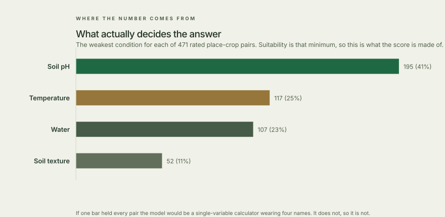
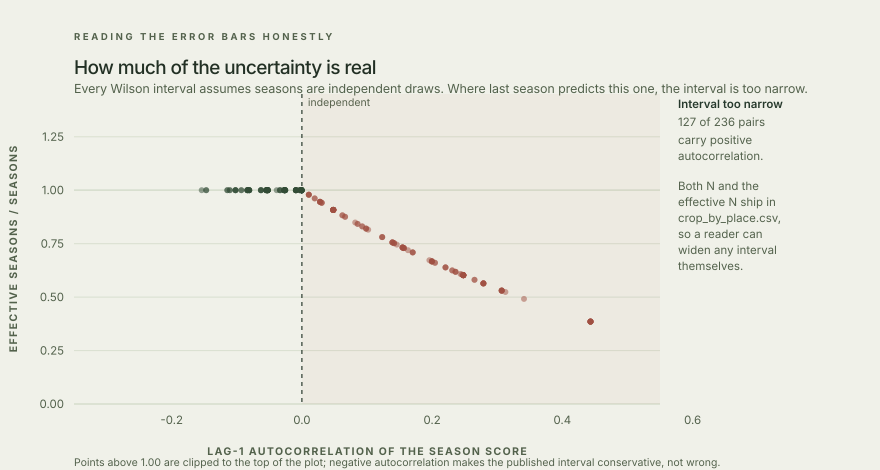
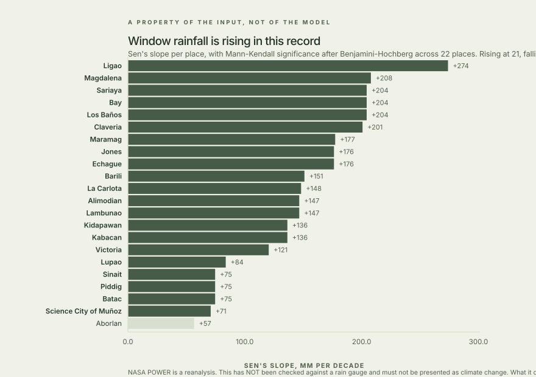
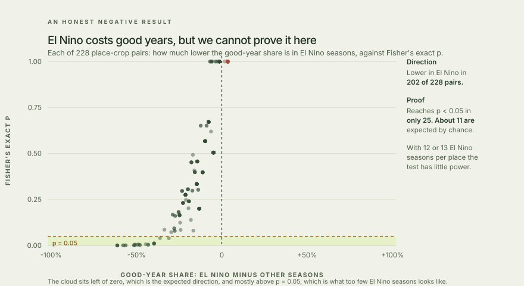
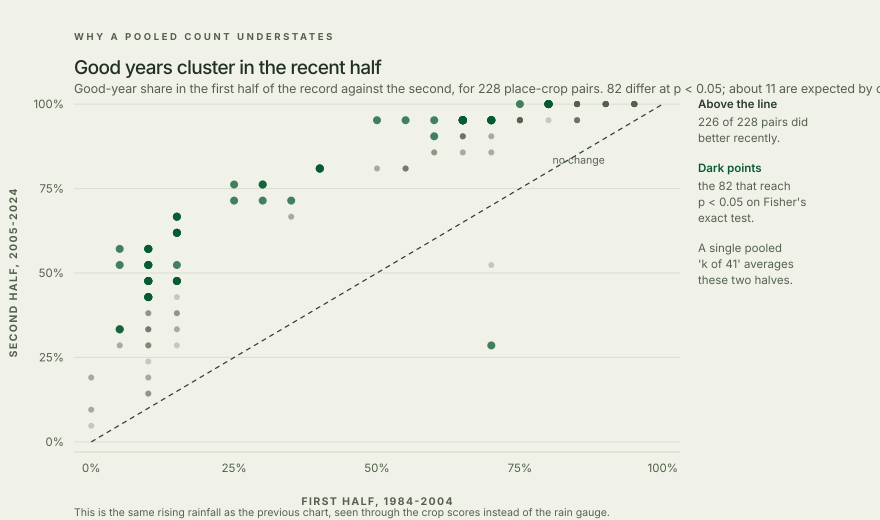
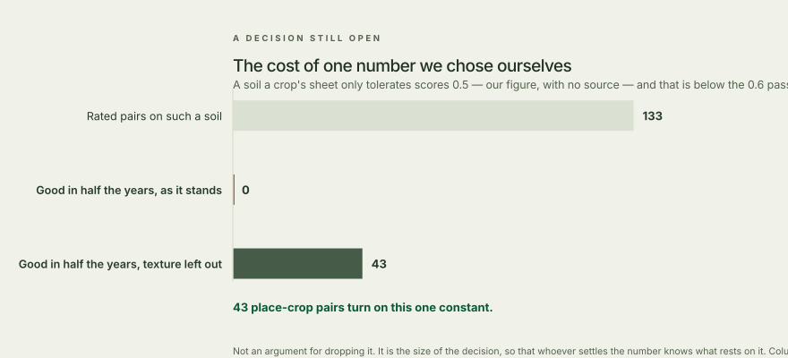
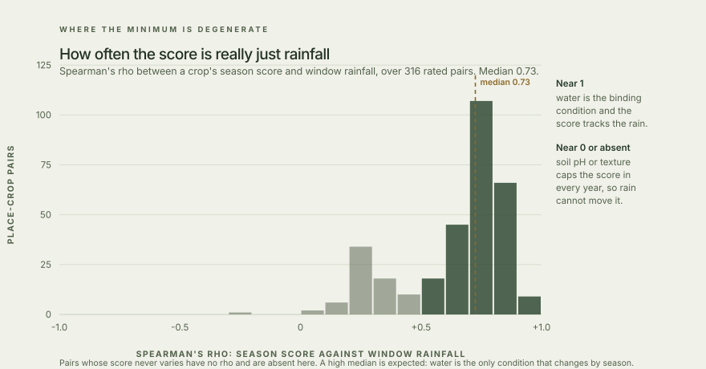
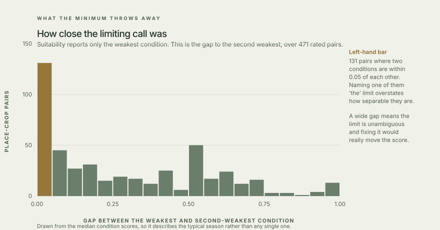

AniNow Klima
How far the model can be trusted
471 rated place-crop pairs across 22 places in
15 distinct NASA POWER weather cells. Every chart is drawn from
docs/analysis/, so none can disagree with the tables there.
None of these is a performance figure. There is no
harvest record for these fields, so accuracy, precision, recall and ROC do not exist
for this model and are never reported. What these charts measure is the model's own
internal consistency and the quality of its inputs: what decides an answer, how much
of the stated uncertainty is real, and which of our own chosen constants the answer
rests on.







